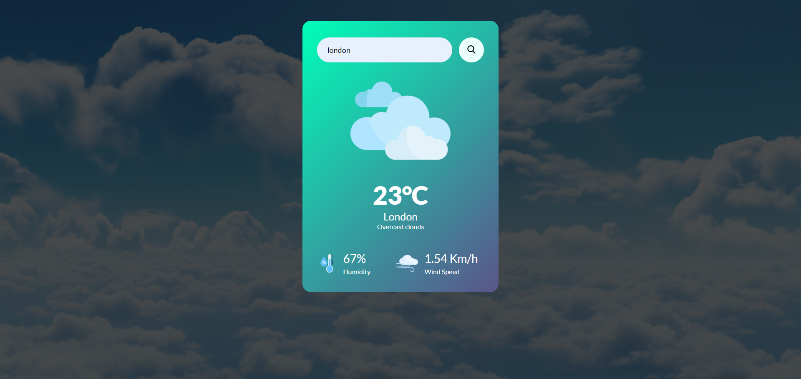
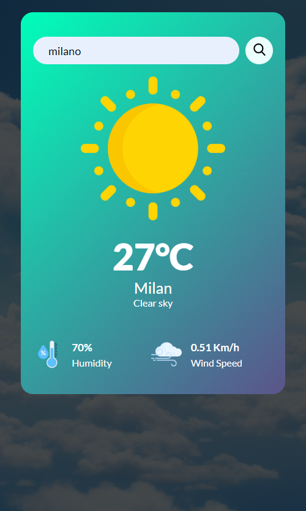

Weather App
בפרויקט הבא ניתן לצפות במזג האוויר לפי סינון של עיר ספציפית, מכל מדינה בעולם, יש לכתוב את שם העיר בשורת החיפוש ומיד תתקבל תצוגת מזג האוויר של אותה העיר בלייב, ניתן לראות את הטמפרטורה הנוחכית, את מהירות הרוח, ואת אחוזי הלחות באוויר. כל האייקונים מותאמים לפי סוג מזג האוויר, ליום וללילה. בפרויקט נעשה שימוש ב API של openweathermap.



